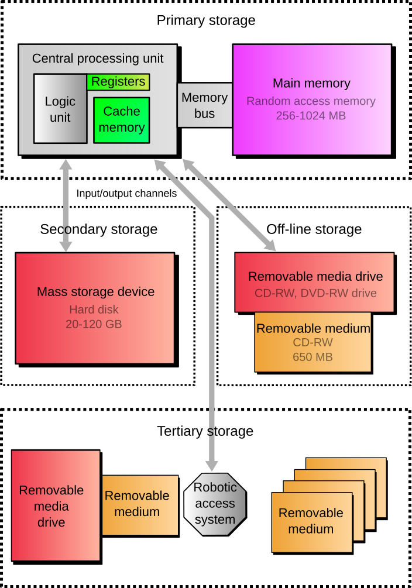

overview of techCmpr
description::
× Mcsh-creation: {2019-07-14}
· computer is an-info-machine that processes human and machine-information.
name::
* McsEngl.McshTchInf000003.last.html//dirTchInf//dirMcsh!⇒techCmpr,
* McsEngl.dirMcsh/dirTchInf/McshTchInf000003.last.html!⇒techCmpr,
* McsEngl.cmr!⇒techCmpr,
* McsEngl.cmpr!⇒techCmpr,
* McsEngl.computator!⇒techCmpr, {2023-08-23},
* McsEngl.computer!⇒techCmpr,
* McsEngl.computer.lagoElln!=υπολογιστής!ο,
* McsEngl.computer.lagoTurk!=bilgisayar,
* McsEngl.computer.lagoZhon!=diànnǎo-电脑,
* McsEngl.computer-machine!⇒techCmpr,
* McsEngl.computer-system!⇒techCmpr,
* McsEngl.info-machine.computer!⇒techCmpr,
* McsEngl.informator!⇒techCmpr, {2023-08-23},
* McsEngl.machine.info.computer!⇒techCmpr,
* McsEngl.techCmpr!=computer,
* McsEngl.techCmpr!~McsTchInf000003,
* McsEngl.techCmpr!=computer-machine,
====== lagoChinese:
* McsZhon.diànnǎo-电脑!=techCmpr::electric-brain,
* McsZhon.diànnǎo-电脑!=techCmpr::electric-brain,
* McsZhon.电脑-diànnǎo!=techCmpr::electric-brain,
* McsZhon.jìsuànjī-计算机!=techCmpr::calculating-machine, technical-formal,
* McsZhon.计算机-jìsuànjī!=techCmpr::calculating-machine, technical-formal,
====== lagoGreek:
* McsElln.υπολογιστής!ο!=techCmpr,
====== lagoTurkish:
* McsTurk.bilgisayar!=techCmpr,
01_hardware of techCmpr
description::
· hardware of computer\a\ is any physical, tangible part of it\a\.
name::
* McsEngl.Cmrhardware,
* McsEngl.techCmpr'01_hardware!⇒Cmrhardware,
* McsEngl.techCmpr'att001-hardware!⇒Cmrhardware,
* McsEngl.techCmpr'hardware-att001!⇒Cmrhardware,
* McsEngl.techCmpr-hardware!⇒Cmrhardware,
* McsEngl.computer-hardware!⇒Cmrhardware,
* McsEngl.hardware-of-computer!⇒Cmrhardware,
====== lagoChinese:
* McsZhon.yìngtǐ-硬体-(硬體)!=Cmrhardware,
* McsZhon.硬体-(硬體)-yìngtǐ!=Cmrhardware,
====== lagoGreek:
* McsElln.υλικό-υπολογιστή!=Cmrhardware,
hardware.SPECIFIC of techCmpr
description::
* processor-unit,
* storage-unit,
* input-unit,
* output-unit,
name::
* McsEngl.Cmrhardware.specific,
hardware.processor of techCmpr
description::
· processor of a-computer\a\ is its\a\ unit that performs the-info-processing task.
name::
* McsEngl.techCmpr'processor!⇒techCmpr-processor,
* McsEngl.Cmrhardware.processor!⇒techCmpr-processor,
* McsEngl.techCmpr-processor,
* McsEngl.computer-processor!⇒techCmpr-processor,
* McsEngl.processor-of-computer!⇒techCmpr-processor,
====== lagoChinese:
* McsZhon.chǔlǐqì-处理器-(處理器)!=techCmpr-processor,
* McsZhon.chǔlǐqì-处理器-(處理器)!=techCmpr-processor,
* McsZhon.处理器-(處理器)-chǔlǐqì!=techCmpr-processor,
processor.SPECIFIC of techCmpr
description::
· alphabetically:
* CPU – central processing unit,
* DSP – digital signal processor,
* GPU – graphics processing unit,
* ISP – image signal processor,
* NPU – neural processing unit,
* PPU – physics processing unit,
* SPU or SPE – synergistic processing element in Cell microprocessor,
* TPU – tensor processing unit,
* VPU – vision processing unit,
* FPGA – field-programmable gate array,
* general-purpose--CPU,
* general-purpose.no--CPU,
* integrated-circuit--CPU,
* mechanical-CPU,
* microprocessor,
* sound chip,
* transistor-CPU,
* vacuum-tube--CPU,
name::
* McsEngl.techCmpr-processor.specific,
processor.CPU of techCmpr
description::
· computer-CPU is the-main processing unit of a-computer.
name::
* McsEngl.CPU-of-computer!⇒techCmpr-Cpu,
* McsEngl.central-processing-unit--of-computer!⇒techCmpr-Cpu,
* McsEngl.techCmpr'CPU!⇒techCmpr-Cpu,
* McsEngl.techCmpr-Cpu,
* McsEngl.Cmrhardware.CPU!⇒techCmpr-Cpu,
* McsEngl.techCmpr-processor.CPU!⇒techCmpr-Cpu,
* McsEngl.computer-CPU!⇒techCmpr-Cpu,
processor.CPU.NO of techCmpr
processor.microprocessor of techCmpr
description::
· a-microprocessor is one or more central-processing-units on a-single integrated-circuit.
name::
* McsEngl.techCmpr-Cpu.microprocessor!⇒techCmpr-microprocessor,
* McsEngl.techCmpr-microprocessor,
* McsEngl.computer-microprocessor!⇒techCmpr-microprocessor,
* McsEngl.microprocessor-of-computer!⇒techCmpr-microprocessor,
hardware.memory of techCmpr
description::
· techCmpr-memory is hardware that stores software\a\ TEMPORARILY for processing and the-Cpu access it\a\ directly.
· you will-see to call it 'PRIMARY STORAGE'.

[https://upload.wikimedia.org/wikipedia/commons/3/3e/Computer_storage_types.svg]
name::
* McsEngl.Cpu-accessible--computer-storage!⇒Cmrmemory,
* McsEngl.Cmrmemory,
* McsEngl.techCmpr'memory!⇒Cmrmemory,
* McsEngl.techCmpr-memory!⇒Cmrmemory,
* McsEngl.computer-memory!⇒Cmrmemory,
* McsEngl.memory-of-computer!⇒Cmrmemory,
* McsEngl.primary-storage-of-computer!⇒Cmrmemory,
====== lagoGreek:
* McsElln.μνήμη-υπολογιστή!=Cmrmemory,
memory.internal of techCmpr
description::
· internal-memory is memory inside the-Cpu.
name::
* McsEngl.techCmpr-internal-memory,
* McsEngl.Cmrmemory.internal!⇒techCmpr-internal-memory,
interal--Cpu-storage.cache of techCmpr
description::
"Processor cache is an intermediate stage between ultra-fast registers and much slower main memory. It was introduced solely to improve the performance of computers. Most actively used information in the main memory is just duplicated in the cache memory, which is faster, but of much lesser capacity. On the other hand, main memory is much slower, but has a much greater storage capacity than processor registers. Multi-level hierarchical cache setup is also commonly used—primary cache being smallest, fastest and located inside the processor; secondary cache being somewhat larger and slower."
[{2020-04-04} https://en.wikipedia.org/wiki/Computer_data_storage#Primary_storage]
name::
* McsEngl.Cmrcache,
* McsEngl.cache-of-computer!⇒Cmrcache,
* McsEngl.techCmpr'cache!⇒Cmrcache,
* McsEngl.techCmpr-Cpu-cache!⇒Cmrcache,
* McsEngl.techCmpr-cache!⇒Cmrcache,
* McsEngl.techCmpr-internal-memory.cache!⇒Cmrcache,
* McsEngl.processor-cache!⇒Cmrcache,
interal--Cpu-storage.register of techCmpr
description::
"Processor registers are located inside the processor. Each register typically holds a word of data (often 32 or 64 bits). CPU instructions instruct the arithmetic logic unit to perform various calculations or other operations on this data (or with the help of it). Registers are the fastest of all forms of computer data storage."
[https://en.wikipedia.org/wiki/Computer_data_storage#Primary_storage]
name::
* McsEngl.Cmrregister,
* McsEngl.techCmpr'register!⇒Cmrregister,
* McsEngl.techCmpr-Cpu-register!⇒Cmrregister,
* McsEngl.techCmpr-register!⇒Cmrregister,
* McsEngl.techCmpr-internal-memory.register!⇒Cmrregister,
* McsEngl.processor-register!⇒Cmrregister,
memory.internalNo of techCmpr
description::
· internalNo-memory is memory external to Cpu.
name::
* McsEngl.CmrRam,
* McsEngl.RAM!⇒CmrRam,
* McsEngl.techCmpr'RAM!⇒CmrRam,
* McsEngl.techCmpr-RAM!⇒CmrRam,
* McsEngl.techCmpr-internalNo-memory!⇒CmrRam,
* McsEngl.Cmrmemory.internalNo!⇒CmrRam,
* McsEngl.main-memory-of-computer!⇒CmrRam,
hardware.storage of techCmpr
description::
· storage of computer\a\ is hardware that stores its\a\ software PERMANENTLY.
"Secondary storage (also known as external memory or auxiliary storage), differs from primary storage in that it is not directly accessible by the CPU. The computer usually uses its input/output channels to access secondary storage and transfer the desired data to primary storage. Secondary storage is non-volatile (retaining data when power is shut off)."
[https://en.wikipedia.org/wiki/Computer_data_storage#Secondary_storage]
[https://upload.wikimedia.org/wikipedia/commons/3/3e/Computer_storage_types.svg]
name::
* McsEngl.Cmrstorage,
* McsEngl.techCmpr'storage!⇒Cmrstorage,
* McsEngl.Cmrhardware.storage!⇒Cmrstorage,
* McsEngl.techCmpr-storage!⇒Cmrstorage,
* McsEngl.primaryNo-storage-of-computer!⇒Cmrstorage,
* McsEngl.storage-of-computer!⇒Cmrstorage,
====== lagoGreek:
* McsElln.αποθήκη-υπολογιστή!=Cmrstorage,
Cmrstorage.SPECIFIC
description::
· alphabetically:
* CD-drive,
* DVD-drive,
* USB-drive,
* floppy-disk,
* hard-disk-drive-(HDD),
* magnetic-tape,
* optical-storage,
* solid-state-drive-(SSD),
name::
* McsEngl.techCmpr-CpuNo-storage.specific,
addressWpg::
* https://twitter.com/historylvrsclub/status/1167893075126931460,
Cmrstorage.USB-drive
description::
· TROUBLESHOOTING:
- open device-manager and add drive-letter.
name::
* McsEngl.Cmrstorage.USB-drive,
* McsEngl.Cmrtroubleshooting.USB-drive-not-showing-up,
* McsEngl.USB-hard-disk,
hardware.input of techCmpr
description::
·
name::
* McsEngl.Cmrhardware.input!⇒techCmpr-input-hardware,
* McsEngl.techCmpr-input-hardware,
* McsEngl.input-hardware-of-computer!⇒techCmpr-input-hardware,
hardware.output of techCmpr
description::
·
name::
* McsEngl.Cmrhardware.output!⇒techCmpr-output-hardware,
* McsEngl.techCmpr-output-hardware,
* McsEngl.output-hardware-of-computer!⇒techCmpr-output-hardware,
02_software of techCmpr
description::
· software of computer\a\ is the-part-complement of hardware, ie the-data that it\a\ processes[b] and the-algorithms that uses to do it[b].
name::
* McsEngl.techCmpr'02_software!⇒techCmpr-software,
* McsEngl.techCmpr'att002-software!⇒techCmpr-software,
* McsEngl.techCmpr'software!⇒techCmpr-software,
* McsEngl.techCmpr-software,
* McsEngl.computer-software!⇒techCmpr-software,
* McsEngl.information-of-computer!⇒techCmpr-software,
* McsEngl.software-of-computer!⇒techCmpr-software,
====== lagoChinese:
* McsZhon.ruǎnjiàn-软件-(軟件)!=techCmpr-software,
* McsZhon.软件-(軟件)-ruǎnjiàn!=techCmpr-software,
language (link) of software of techCmpr
software.SPECIFIC of techCmpr
description::
* data,
* algorithm,
name::
* McsEngl.techCmpr-sotware.specific,
software.data of techCmpr
description::
· data of computer is input or output information of a-computer.
name::
* McsEngl.techCmpr'data!⇒techCmpr-data,
* McsEngl.techCmpr-data,
* McsEngl.techCmpr-software.data!⇒techCmpr-data,
* McsEngl.computer-data!⇒techCmpr-data,
* McsEngl.data-of-cmrdata!⇒techCmpr-data,
software.algorithm (link) of techCmpr
03_health-issue of techCmpr
name::
* McsEngl.techCmpr'03_health-issue,
* McsEngl.techCmpr'att003-health-issue,
* McsEngl.techCmpr'health-issue-att003,
* McsEngl.techCmpr'health-issue,
* McsEngl.computer-induced-medical-problem,
* McsEngl.diseaseFrom-computer,
* McsEngl.disease.252-computer-induced,
* McsEngl.disease.computer-induced-252,
description::
"Computer-induced health problems can be an umbrella term for the various problems a computer user can develop from extended and incorrect computer use. A computer user may experience many physical health problems from using computers extensively over a prolonged period of time in an inefficient manner. The computer user may have poor etiquette when using peripherals, for example incorrect posture. Reportedly, excessive use of electronic screen media can have ill effects on mental health related to mood, cognition, and behavior, even to the point of hallucination.[1]"
[https://en.wikipedia.org/wiki/Computer-induced_medical_problems]
specific-tree-of-diseaseFrom-computer::
* carpal-tunnel-syndrome-CTS,
* computer-mental-disorder,
* computer-musculoskeletal-disorder,
* computer-vision-syndrome,
* sleep-disorder,
interface of techCmpr
description::
· "In computing, an interface is a shared boundary across which two or more separate components of a computer system exchange information. The exchange can be between software, computer hardware, peripheral devices, humans, and combinations of these.[1] Some computer hardware devices, such as a touchscreen, can both send and receive data through the interface, while others such as a mouse or microphone may only provide an interface to send data to a given system.[2]"
[{2023-08-02 retrieved} https://en.wikipedia.org/wiki/Interface_(computing)]
name::
* McsEngl.Cmrinterface,
* McsEngl.techCmpr'att004-interface!⇒Cmrinterface,
* McsEngl.techCmpr'interface!⇒Cmrinterface,
Cmrinterface.hardware
description::
· "Hardware interfaces exist in many components, such as the various buses, storage devices, other I/O devices, etc. A hardware interface is described by the mechanical, electrical, and logical signals at the interface and the protocol for sequencing them (sometimes called signaling).[3] A standard interface, such as SCSI, decouples the design and introduction of computing hardware, such as I/O devices, from the design and introduction of other components of a computing system, thereby allowing users and manufacturers great flexibility in the implementation of computing systems.[3] Hardware interfaces can be parallel with several electrical connections carrying parts of the data simultaneously or serial where data are sent one bit at a time.[4]"
[{2023-08-02 retrieved} https://en.wikipedia.org/wiki/Interface_(computing)]
name::
* McsEngl.Cmrinterface.hardware,
* McsEngl.hardware-interface,
Cmrinterface.software
description::
· "A software interface may refer to a wide range of different types of interface at different "levels". For example, an operating system may interface with pieces of hardware. Applications or programs running on the operating system may need to interact via data streams, filters, and pipelines.[5] In object oriented programs, objects within an application may need to interact via methods.[6]"
[{2023-08-02 retrieved} https://en.wikipedia.org/wiki/Interface_(computing)]
name::
* McsEngl.Cmrinterface.software,
* McsEngl.Softinterface,
* McsEngl.software-interface,
Softinterface.SPECIFIC
description::
· ABI,
· API,
name::
* McsEngl.Softinterface.specific,
Softinterface.ABI
description::
· "In computer software, an application binary interface (ABI) is an interface between two binary program modules. Often, one of these modules is a library or operating system facility, and the other is a program that is being run by a user.
An ABI defines how data structures or computational routines are accessed in machine code, which is a low-level, hardware-dependent format. In contrast, an API defines this access in source code, which is a relatively high-level, hardware-independent, often human-readable format. A common aspect of an ABI is the calling convention, which determines how data is provided as input to, or read as output from, computational routines. Examples of this are the x86 calling conventions.
Adhering to an ABI (which may or may not be officially standardized) is usually the job of a compiler, operating system, or library author. However, an application programmer may have to deal with an ABI directly when writing a program in a mix of programming languages, or even compiling a program written in the same language with different compilers.
An ABI is as important as the underlying hardware architecture. The program will fail equally if it violates any constraints of these two."
[{2023-08-02 retrieved} https://en.wikipedia.org/wiki/Application_binary_interface]
name::
* McsEngl.ABI!=application-binary-interface,
* McsEngl.Softinterface.ABI,
Cmrinterface.user
description::
· "A user interface is a point of interaction between a computer and humans; it includes any number of modalities of interaction (such as graphics, sound, position, movement, etc.) where data is transferred between the user and the computer system."
[{2023-08-02 retrieved} https://en.wikipedia.org/wiki/Interface_(computing)]
name::
* McsEngl.Cmrinterface.user,
* McsEngl.user-interface,
04_resource of techCmpr
name::
* McsEngl.techCmpr'04_resource,
* McsEngl.techCmpr'attResource,
* McsEngl.techCmpr'InfRsc,
description::
* https://waxy.org/2008/06/the_machine_that_changed_the_world_the_thinking_machine/,
05_structure of techCmpr
name::
* McsEngl.techCmpr'05_structure,
* McsEngl.techCmpr'attStructure,
* McsEngl.techCmpr'structure,
description::
* hardware,
* software,
06_DOING of techCmpr
name::
* McsEngl.techCmpr'06_doing!⇒techCmpr-doing,
* McsEngl.techCmpr'attDoing!⇒techCmpr-doing,
* McsEngl.techCmpr'doing!⇒techCmpr-doing,
* McsEngl.techCmpr-doing,
doing.SPECIFIC of techCmpr
description::
* main-functing,
* evoluting,
name::
* McsEngl.techCmpr-doing.specific,
doing.main-functing of techCmpr
description::
· computing of techCmpr\a\ is any info-process it\a\ can-do.
name::
* McsEngl.computation//techCmpr!⇒computing,
* McsEngl.computer-usage!⇒computing,
* McsEngl.computing, {2023-11-01},
* McsEngl.techCmpr'main-functing!⇒computing,
* McsEngl.techCmpr-doing.main-functing!⇒computing,
* McsEngl.techCmpr-usage!⇒computing,
doing.cloning-system-disk of techCmpr
description::
· task: replace old SSD of 250MB with the-operating-system with another of 1TB because the-first was full, WITHOUT reinstalling the-system.
· on WINDOWS-10:
* install the-hardware.
* right-click on start and open 'Disk Management'.
* initialize the-disk with GPT partition style.
* install 'NIUBI Partition Editor Free Edition-(NPE)'
* execute 'Clone Disk Wizard' in NPE, and expand the-volume of data on all unallocated space in new disk (read the-help).
* on BIOS set the-new disk to boot first.
* do-not-add volumes after initialization.
* other 'free' programs (Macrium Reflect, AOMEI Backupper, MiniTool Partition Wizard) ask to pay to do most of these tasks.
* CloneZilla which needs a-live-Usb has no friedly user-interface and does-not-allocate the-new space.
name::
* McsEngl.cloning-system-disk-of-techCmpr,
* McsEngl.techCmpr'cloning-system-disk,
* McsEngl.techCmpr-doing.cloning-system-disk,
* McsEngl.replacing-system-disk-of-techCmpr,
====== lagoGreek:
* McsElln.αντικατάσταση-δίσκου-συστήματος-υπολογιστή,
* McsElln.κλωνοποίηση-δίσκου-συστήματος-υπολογιστή,
07_EVOLUTING of techCmpr
name::
* McsEngl.techCmpr'07_evoluting,
* McsEngl.techCmpr'attEvoluting,
* McsEngl.evoluting-of-techCmpr,
* McsEngl.techCmpr'evoluting,
{1975}-techCmpr-portable-computer::
"A portable computer was a computer designed to be easily moved from one place to another and included a display and keyboard. The first commercially sold portable was the 50 pound IBM 5100, introduced 1975."
[https://en.wikipedia.org/wiki/Portable_computer]
* McsEngl.{science'1975}-techCmpr-portable-computer,
{1956}-techCmpr-operating-system::
"The first operating system used for real work was GM-NAA I/O, produced in 1956 by General Motors' Research division[ for its IBM 704."
[https://en.wikipedia.org/wiki/History_of_operating_systems#Mainframes]
* McsEngl.{science'1956}-operating-system,
{1953-11}-techCmpr-transistor-computer::
· the-first transistor-computer in the world, became operational in November 1953 at the-University-of-Manchester by a-team under the-leadersipt of Tom-Kilburn.
[https://en.wikipedia.org/wiki/Manchester_computers#Transistor_Computer]
* McsEngl.{science'1953-11}-techCmpr-transistor-computer,
{1948}-techCmpr-strored-program-computer::
"The Manchester Baby, also known as the Small-Scale Experimental Machine (SSEM), was the world's first electronic stored-program computer. It was built at the University of Manchester, England, by Frederic C. Williams, Tom Kilburn, and Geoff Tootill, and ran its first program on 21 June 1948,"
[https://en.wikipedia.org/wiki/Manchester_Baby]
* McsEngl.{science'1948}-techCmpr-strored-program-computer,
{1942}-techCmpr-electronic-binary-computer::
· the Atanasoff–Berry-computer (ABC) is the-first electronic binary but not program-controlled and not turing-complete.
[https://en.wikipedia.org/wiki/Atanasoff%E2%80%93Berry_computer]
* McsEngl.{science'1942}-techCmpr-electronic-binary-computer,
{1941}-techCmpr-elecromechanical-program-controlled-binary::
"The Z3 was a German electromechanical computer designed by Konrad Zuse. It was the world's first working programmable, fully automatic digital computer. The Z3 was built with 2,600 relays, implementing a 22-bit word length that operated at a clock frequency of about 4–5 Hz. Program code was stored on punched film. Initial values were entered manually."
[https://en.wikipedia.org/wiki/Z3_(computer)]
---
"In 1941 Konrad Zuse completed the Z3 (computer), the first working Turing-complete machine; this was the first digital computer in the modern sense."
[https://en.wikipedia.org/wiki/Turing_completeness]
* McsEngl.{science'1941}-techCmpr-elecromechanical-program-controlled-binary,
{1840i10}-techCmpr-design-program-controlled-computer::
"The first design for a program-controlled computer was Charles Babbage's Analytical Engine in the 1830s."
[https://en.wikipedia.org/wiki/Manchester_Baby]
* McsEngl.{science'1840i10}-techCmpr-design-program-controlled-computer,
{Bce0100≈}-techCmpr-first-analog::
=== Antikythera-mechanism first analog:
"The Antikythera mechanism is an ancient Greek analogue computer used to predict astronomical positions and eclipses for calendar and astrological purposes decades in advance. It could also be used to track the four-year cycle of athletic games which was similar to an Olympiad, the cycle of the ancient Olympic Games."
[https://en.wikipedia.org/wiki/Antikythera_mechanism]
* McsEngl.{science'Bce100≈}-techCmpr-first-analog,
WHOLE-PART-TREE of techCmpr
name::
* McsEngl.techCmpr'whole-part-tree,
whole-tree-of-::
* household,
===
* computer-network,
GENERIC-SPECIFIC-TREE of techCmpr
name::
* McsEngl.techCmpr'generic-specific-tree,
generic-tree-of-::
* info-machine,
* machine,
...
* entity,
att-inherited-from::
*
att-own-of-::
*
techCmpr.SPECIFIC
name::
* McsEngl.techCmpr.specific,
specific::
* analog-computer,
* binary-computer,
* digital-computer,
* mechanical-computer,
* transistor-computer,
* trinary-computer,
* quantum-computer,
addressWpg::
* https://en.wikipedia.org/wiki/Category:Classes_of_computers,
techCmpr.spec-div.decade
description::
· on 2010s:
* modern2010s-computer,
* old2010s-computer,
* future2010s-computer,
name::
* McsEngl.techCmpr.spec-div.decade,
techCmpr.spec-div.hardware
description::
· on hardware:
* mechanical-computer,
* electro-mechanical-computer,
* electronic-computer:,
* electronic.vacuum-tube--computer,
* electronic.transistor-computer,
* electronic.microchip-computer,
name::
* McsEngl.techCmpr.spec-div.hardware,
techCmpr.mechanical
description::
"A mechanical computer is built from mechanical components such as levers and gears, rather than electronic components. The most common examples are adding machines and mechanical counters, which use the turning of gears to increment output displays."
[https://en.wikipedia.org/wiki/Mechanical_computer]
name::
* McsEngl.techCmpr.mechanical!⇒cmrMechanical,
* McsEngl.cmrMechanical,
techCmpr.electro-mechanical
description::
· electro-mechanical--computer is a-computer with electric-switches that drive mechanical-relays to perform computations.
name::
* McsEngl.techCmpr.electro-mechanical,
* McsEngl.electro-mechanical--computer,
* McsEngl.relay-computer,
addressWpg::
* https://en.wikipedia.org/wiki/Category:Electro-mechanical_computers,
techCmpr.electronic
description::
· electronic-computer is a-computer that uses electronic components such as vacuum-tubes, transistors, microchips.
name::
* McsEngl.techCmpr.electronic,
* McsEngl.electronic-computer,
techCmpr.vacuum-tube
description::
"Vacuum tube computers, now termed first generation computers, are programmable digital computers using vacuum tube logic circuitry. They were preceded by systems using electromechanical relays and followed by systems built from discrete transistors."
[https://en.wikipedia.org/wiki/List_of_vacuum_tube_computers]
name::
* McsEngl.techCmpr.vacuum-tube!⇒cmrVtube,
* McsEngl.cmrVtube,
* McsEngl.first-generation-computer!⇒cmrVtube,
* McsEngl.tube-computer!⇒cmrVtube,
* McsEngl.vacuum-tube-computer!⇒cmrVtube,
info-resource of cmrVtube
name::
* McsEngl.cmrVtube'InfRsc,
description::
* https://en.wikipedia.org/wiki/Vacuum_tube_computer,
* https://en.wikipedia.org/wiki/List_of_vacuum_tube_computers,
EVOLUTING of cmrVtube
name::
* McsEngl.evoluting-of-cmrVtube,
* McsEngl.cmrVtube'evoluting,
{1942}::
=== Atanasoff-Berry-computer:
"The Atanasoff–Berry computer (ABC) was the first automatic electronic digital computer, an early electronic digital computing device that has remained somewhat obscure. The ABC's priority is debated among historians of computer technology, because it was neither programmable, nor Turing-complete.
Conceived in 1937, the machine was built by Iowa State College mathematics and physics professor John Vincent Atanasoff with the help of graduate student Clifford Berry. It was designed only to solve systems of linear equations and was successfully tested in 1942."
[https://en.wikipedia.org/wiki/Atanasoff%E2%80%93Berry_computer]
{1939}::
=== Atanasoff-Berry-computer-prototype:
"The Atanasoff–Berry computer, a prototype of which was first demonstrated in 1939, is now credited as the first vacuum tube computer. However it was not a general-purpose computer being able to only solve a system of linear equations and it was also not very reliable."
[{2014-06-01} https://en.wikipedia.org/wiki/Vacuum_tube_computer]
techCmpr.transistor
description::
"A transistor computer, now often called a second generation computer,[1] is a computer which uses discrete transistors instead of vacuum tubes. The first generation of electronic computers used vacuum tubes, which generated large amounts of heat, were bulky and unreliable. A second generation of computers, through the late 1950s and 1960s featured circuit boards filled with individual transistors and magnetic core memory. These machines remained the mainstream design into the late 1960s, when integrated circuits started appearing and led to the third-generation machines."
[https://en.wikipedia.org/wiki/Transistor_computer]
name::
* McsEngl.techCmpr.transistor,
* McsEngl.second-generation--computer,
* McsEngl.transistor-computer,
* McsEngl.transistorized-computer,
addressWpg::
* https://en.wikipedia.org/wiki/List_of_transistorized_computers,
techCmpr.integrated-circuit
description::
· integrated-circuit--computer is an-electronic-computer that uses integrated-circuits.
name::
* McsEngl.IC-computer!⇒cmrChip,
* McsEngl.techCmpr.microchip!⇒cmrChip,
* McsEngl.cmrChip,
* McsEngl.integrated-circuit--computer!⇒cmrChip,
cmrChip.SPECIFIC
description::
· on CPU:
* LSI-CPU--computer,
* SSI-CPU--computer,
* microprocessor-computer,
name::
* McsEngl.cmrChip.specific,
cmrChip.microprocessor
description::
· microprocessor-computer is a-chip-computer with one microprocessor as CPU.
name::
* McsEngl.techCmpr.microprocessor!⇒cmrMicroprocessor,
* McsEngl.cmrChip.microprocessor!⇒cmrMicroprocessor,
* McsEngl.microcomputer!⇒cmrMicroprocessor,
* McsEngl.microprocessor-computer!⇒cmrMicroprocessor,
addressWpg::
* https://en.wikipedia.org/wiki/Microcomputer,
* https://en.wikipedia.org/wiki/Lists_of_microcomputers,
techCmpr.SoC
description::
"A system on a chip or system on chip is an integrated circuit (also known as a "chip") that integrates all components of a computer or other electronic system. These components typically (but not always) include a central processing unit (CPU), memory, input/output ports and secondary storage – all on a single substrate or microchip, the size of a coin. It may contain digital, analog, mixed-signal, and often radio frequency signal processing functions, depending on the application."
[https://en.wikipedia.org/wiki/System_on_a_chip]
name::
* McsEngl.SoC-computer!⇒cmrOnchip,
* McsEngl.techCmpr.system-on-chip!⇒cmrOnchip,
* McsEngl.cmrOnchip,
techCmpr.spec-div.program
description::
· if they are-controlled with a-program or not:
* programable-computer,
* programableNo-computer,
name::
* McsEngl.techCmpr.spec-div.program,
techCmpr.programable
description::
· programable-computer is a-computer which it is-controlled by a-program.
name::
* McsEngl.techCmpr.programable,
* McsEngl.program-controlled--computer,
* McsEngl.programable-computer,
specific::
* stored-program--programable-computer,
* stored-program.no--programable-computer,
techCmpr.stored-program programable-computer
description::
"A stored-program computer is a computer that stores program instructions in electronic memory. This contrasts with machines where the program instructions are stored on plugboards or similar mechanisms."
[https://en.wikipedia.org/wiki/Stored-program_computer]
name::
* McsEngl.stored-program--programable-computer,
techCmpr.stored-program.no programable-computer
description::
"Early computers such as the ENIAC had to be physically rewired to perform different tasks, which caused these machines to be called "fixed-program computers". Since the term "CPU" is generally defined as a device for software (computer program) execution, the earliest devices that could rightly be called CPUs came with the advent of the stored-program computer."
[https://en.wikipedia.org/wiki/Central_processing_unit]
name::
* McsEngl.fixed-program--computer,
* McsEngl.stored-program.no--programable-computer,
techCmpr.programableNo
description::
· programableNo-computer is a-computer which it is-NOT-controlled by a-program.
name::
* McsEngl.techCmpr.programableNo,
* McsEngl.programableNo-computer,
techCmpr.spec-div.Os
description::
· division on if has operating-system:
* Os-techCmpr,
* OsNo-techCmpr,
name::
* McsEngl.techCmpr.spec-div.Os,
techCmpr.Os
description::
· Os-computer is a-computer WITH an-operating-system.
==
"The first operating system used for real work was GM-NAA I/O, produced in 1956 by General Motors' Research division for its IBM 704."
[https://en.wikipedia.org/wiki/History_of_operating_systems#Mainframes]
name::
* McsEngl.Os-computer!⇒cmrOs,
* McsEngl.techCmpr.Os!⇒cmrOs,
* McsEngl.cmrOs,
* McsEngl.operating-system--computer!⇒cmrOs,
techCmpr.OsNo
description::
· OsNo-computer is a-computer WITHOUT an-operating-system.
name::
* McsEngl.OsNo-computer!⇒cmrOsNo,
* McsEngl.techCmpr.OsNo!⇒cmrOsNo,
* McsEngl.cmrOsNo,
* McsEngl.operating-system.no--computer!⇒cmrOsNo,
techCmpr.spec-div.digital-info
description::
* digital-computer,
* digitalNo-computer,
name::
* McsEngl.techCmpr.spec-div.digital-info,
techCmpr.digital
description::
· digital-computer is a-computer that process digital-information (information represented with discrete quantities) eg binary, trinary, ...
name::
* McsEngl.cmp.digital,
* McsEngl.digital-computer,
techCmpr.digitalNo (analog)
description::
· analog-computer is a-computer that process analog-information (information represented with continuous quantities) eg distance, area, time, ...
name::
* McsEngl.analog-computer,
* McsEngl.techCmpr.digitalNo,
techCmpr.spec-div.main-functing
description::
· on main-functing:
* general-purpose--computer,
* general-purpose.no--computer,
name::
* McsEngl.techCmpr.spec-div.main-functing,
techCmpr.general-purpose
description::
· general-purpose--computer is a-computer with main-function ANY info-processing task.
name::
* McsEngl.techCmpr.general-purpose,
* McsEngl.general-purpose--computer,
* McsEngl.Turing-complete--computer,
addressWpg::
* Rudd-Canaday, Early Turing-complete Computers, http://www.ruddcanaday.com/post-ww2-computers/,
techCmpr.general-purpose.no
description::
· special-purpose--computer is a-computer with main-function a-specific task.
name::
* McsEngl.cmp.general-purpose.no,
* McsEngl.special-purpose--computer,
techCmpr.spec-div.reality
description::
· on reality:
* real-computer:
* real.physical-computer,
* real.virtual-computer,
* realNo-computer,
name::
* McsEngl.techCmpr.spec-div.reality,
techCmpr.real
description::
· real-computer is a-computer that works.
name::
* McsEngl.techCmpr.real!⇒cmrReal,
* McsEngl.cmrReal,
* McsEngl.real-computer!⇒cmrReal,
specific::
=== on-hardware:
* physical-computer,
* virtual-computer,
techCmpr.physical
description::
· physical-computer is a-real-computer implemented in hardware.
· a-physical-machine\a\ works with machine-code today with binary-code which includes an-instruction-set, it\a\ has memory-areas and it\a\ is operating-system dependent.
name::
* McsEngl.techCmpr.physical!⇒cmrPhysical,
* McsEngl.cmrPhysical,
* McsEngl.physical-computer!⇒cmrPhysical,
techCmpr.virtual
description::
· virtual-computer\a\ is a-real-computer implemented in software.
· it\a\ works with binary-code, it\a\ has memory managed with the-code, but it\a\ is independent of operating-systems.
name::
* McsEngl.techCmpr.virtual!⇒cmrVirtual,
* McsEngl.cmrVirtual,
* McsEngl.virtual-computer!⇒cmrVirtual,
* McsEngl.virtual-machine!⇒cmrVirtual,
specific::
* register-vm,
* stack-vm,
techCmpr.spec-div.size
description::
· on size:
* large-techCmpr,
* desktop-techCmpr,
* small-techCmpr,
name::
* McsEngl.techCmpr.spec-div.size,
techCmpr.large
description::
· large-computer I call a-computer bigger than a-desktop.
name::
* McsEngl.techCmpr.large,
* McsEngl.cmrLarge,
* McsEngl.large-computer,
techCmpr.desktop
description::
· desktop-computer is a-computer that we use at a-single location on or near tables.
name::
* McsEngl.techCmpr.desktop,
* McsEngl.cmrDesktop,
* McsEngl.desktop-computer,
techCmpr.small
description::
· small-computer I call a-computer smaller than a-desktop we can-carry with us.
name::
* McsEngl.techCmpr.small,
* McsEngl.cmrSmall,
* McsEngl.small-computer,
specific::
* laptop-computer,
* tablet-computer,
* fablet-computer,
* smartphone,
techCmpr.abstract-003
description::
"Abstract machines are mathematical models of computation. They are used to study the properties of computational systems and to design new ones."
[{2023-10-16 retrieved} https://bard.google.com/chat/ed26e14d8b9ca61b]
· realNo-computer\a\ is a-computer that does-not-work in reality.
· it\a\ is simpler than a-real, usually auto-manages its\a\ memory, and it\a\ is independent of operating-systems.
"overview of abstract-machine:
An abstract machine is a theoretical model of a computer system. It is a simplified representation of a real computer, ignoring many of the details of the hardware and focusing on the essential elements of computation. Abstract machines are often used in computer science education and research to help understand the fundamental concepts of computing.
Abstract machines are typically defined by a set of states, a set of operations, and a set of rules for transitioning between states. The states represent the different configurations of the machine during a computation. The operations represent the different actions that the machine can take, such as reading from memory, writing to memory, and performing arithmetic operations. The rules specify how the machine transitions from one state to another based on the current state and the operation being performed.
Abstract machines can be used to model a variety of different types of computer systems, including CPUs, GPUs, and even entire computer networks. By modeling a computer system as an abstract machine, it is possible to study the system's behavior without having to worry about the specific details of the hardware implementation.
Here is a simple example of an abstract machine:
* **States:**
* Running
* Halted
* **Operations:**
* Add
* Subtract
* Multiply
* Divide
* Read from memory
* Write to memory
* **Rules:**
* If the machine is in the Running state and the Add operation is performed, the machine transitions to the Running state and the contents of the accumulator register are incremented by the value in the memory location specified by the operand.
* If the machine is in the Running state and the Subtract operation is performed, the machine transitions to the Running state and the contents of the accumulator register are decremented by the value in the memory location specified by the operand.
* ... (similar rules for the other operations)
* If the machine is in the Running state and the Halt operation is performed, the machine transitions to the Halted state.
This abstract machine can be used to model a simple CPU that can perform basic arithmetic operations. The accumulator register represents the CPU's register file, and the memory locations represent the CPU's memory. The instructions in a program can be translated into the operations of the abstract machine, and the program can then be executed by simulating the abstract machine.
Abstract machines are a powerful tool for understanding the fundamental concepts of computing. They can be used to model a wide variety of different computer systems, and they can be used to study the behavior of these systems without having to worry about the specific details of the hardware implementation.
Here are some of the benefits of using abstract machines:
* They can help us to understand the fundamental concepts of computing without having to worry about the specific details of the hardware implementation.
* They can be used to model a wide variety of different computer systems, from CPUs to GPUs to entire computer networks.
* They can be used to study the behavior of computer systems without having to write and execute real programs.
* They can be used to design new computer systems and algorithms.
Abstract machines are an essential tool for computer scientists and engineers. They are used in a variety of different applications, including education, research, and software development."
[{2023-10-16 retrieved} https://bard.google.com/chat/78055073257d0fba]
name::
* McsEngl.abstract-computer!⇒cmprAbstract,
* McsEngl.abstract-machine!⇒cmprAbstract,
* McsEngl.cmprAbstract,
* McsEngl.hypothetical-computer!⇒cmprAbstract,
* McsEngl.imaginary-computer!⇒cmprAbstract,
* McsEngl.sciCmpr'abstract-machine,
* McsEngl.techCmpr.003-abstract!⇒cmprAbstract,
* McsEngl.techCmpr.realNo!⇒cmprAbstract,
* McsEngl.theoritical-computer!⇒cmprAbstract,
descriptionLong::
"overview of abstract-machine:
An abstract machine is a theoretical concept in computer science and computational theory. It serves as a model or framework to understand the execution of programs, particularly in the context of programming languages and their implementation. Abstract machines provide a level of abstraction that helps researchers and programmers analyze and reason about the behavior of programs without being tied to the specifics of a physical computer or a particular programming language.
Here's an overview of abstract machines:
1. **Purpose**:
Abstract machines are designed to provide a simplified, high-level representation of a computer system to study and analyze various aspects of program execution. They help in understanding program behavior, program optimization, and language semantics.
2. **Abstraction Level**:
Abstract machines abstract away the low-level details of physical computers, such as hardware architecture, instruction set, and memory management. They provide a more high-level and coherent model of computation.
3. **Variety of Abstract Machines**:
There are several types of abstract machines, each designed for specific purposes. Some well-known abstract machines include:
- **Turing Machine**: A mathematical model of computation that is often used to prove theoretical concepts and study computability.
- **Lambda Calculus**: A formal system for expressing computation, particularly useful for understanding functional programming languages.
- **Abstract Syntax Trees (ASTs)**: These are used in compilers to represent the syntactic structure of a program before code generation.
- **Virtual Machines**: These are used to execute code written in a particular high-level programming language, often with an interpreter or a Just-In-Time (JIT) compiler.
- **Register Machines**: Abstract models used for studying optimization techniques and instruction-level execution.
4. **Execution and Interpretation**:
Abstract machines typically involve an interpreter that interprets a program's code according to the rules defined by the machine's model. This interpretation process can be more flexible and forgiving than physical hardware execution, making it a valuable tool for language design and implementation.
5. **Language Semantics and Compilation**:
Abstract machines are crucial for understanding the semantics of programming languages. Compiler designers often use abstract machines to optimize code generation for specific languages, as well as to translate high-level language constructs into lower-level instructions.
6. **Research and Education**:
Abstract machines are widely used in research and computer science education to study programming language design, semantics, and execution. They help students and researchers experiment with different programming paradigms and gain insights into how programs work at a fundamental level.
7. **Examples**:
- The Stack Machine: A simple abstract machine that uses a stack data structure to execute instructions, commonly used in some programming language interpreters.
- The Java Virtual Machine (JVM): An abstract machine designed to run Java bytecode, which is a common example of a virtual machine used in practice.
In summary, abstract machines are valuable tools in computer science and programming for understanding, analyzing, and optimizing the execution of programs. They provide a bridge between the high-level abstractions of programming languages and the low-level execution details of physical computers."
[{2023-10-16 retrieved} https://chat.openai.com/c/b06521ce-b53f-4adf-b70c-36b024247396]
input of cmprAbstract
description::
· data give to machine
name::
* McsEngl.cmprAbstract'input,
output of cmprAbstract
description::
· data the-machine give to us.
name::
* McsEngl.cmprAbstract'output,
state of cmprAbstract
description::
* Running
* Halted
name::
* McsEngl.cmprAbstract'state,
operation of cmprAbstract
description::
* Add
* Subtract
* Multiply
* Divide
* Read from memory
* Write to memory
name::
* McsEngl.cmprAbstract'operation,
info-resource of cmprAbstract
description::
·
name::
* McsEngl.cmprAbstract.Infrsc,
GENERIC-SPECIFIC-TREE of cmprAbstract
generic-tree-of-cmprAbstract::
* ,
* ... entity,
* McsEngl.cmprAbstract'generic-tree,
specific-tree-of-cmprAbstract::
* ,
"types of abstract-machines:
Abstract machines can be classified into two main types: deterministic and non-deterministic.
* **Deterministic abstract machines** are machines that always produce the same output for the same input. This means that the machine's state transitions are determined entirely by the current state and the operation being performed.
* **Non-deterministic abstract machines** are machines that can produce different outputs for the same input. This means that the machine's state transitions are not entirely determined by the current state and the operation being performed.
Here are some examples of different types of abstract machines:
* **Finite state machines (FSMs)** are deterministic abstract machines that are used to model simple sequential systems. FSMs have a finite number of states and a finite number of operations. The next state of the machine is determined by the current state and the input symbol.
* **Mealy machines** are deterministic abstract machines that are similar to FSMs, but they also produce an output symbol at each state transition.
* **Pushdown automata (PDAs)** are deterministic abstract machines that have a stack in addition to their memory. PDAs can use the stack to store information that can be used to make decisions about future state transitions.
* **Turing machines** are non-deterministic abstract machines that are capable of modeling any computable function. Turing machines have an infinite tape and a head that can read and write symbols on the tape. The head can also move left and right on the tape.
Abstract machines are also used to model the execution of computer programs. For example, the stack machine is an abstract machine that is used to model the execution of programs written in stack-based programming languages, such as Forth and PostScript.
Abstract machines are a powerful tool for understanding the fundamental concepts of computing. They can be used to model a variety of different computer systems and algorithms. Abstract machines are also used in the design and implementation of real computer systems and software."
[{2023-10-16 retrieved} https://bard.google.com/chat/78055073257d0fba]
* McsEngl.cmprAbstract.specific-tree,
cmprAbstract.deterministic
description::
* **Deterministic abstract machines** are machines that always produce the same output for the same input. This means that the machine's state transitions are determined entirely by the current state and the operation being performed.
[{2023-10-16 retrieved} https://bard.google.com/chat/78055073257d0fba]
name::
* McsEngl.cmprAbstract.deterministic,
* McsEngl.deterministic-cmprAbstract,
cmprAbstract.deterministicNo
description::
**Non-deterministic abstract machines** are machines that can produce different outputs for the same input. This means that the machine's state transitions are not entirely determined by the current state and the operation being performed.
[{2023-10-16 retrieved} https://bard.google.com/chat/78055073257d0fba]
name::
* McsEngl.cmprAbstract.deterministicNo,
* McsEngl.deterministicNo-cmprAbstract,
* McsEngl.non-deterministic-cmprAbstract,
cmprAbstract.turing
description::
Turing machines: Turing machines are the most fundamental type of abstract machine. They can be used to model any computational system.
[{2023-10-16 retrieved} https://bard.google.com/chat/ed26e14d8b9ca61b]
name::
* McsEngl.cmprAbstract.turing,
* McsEngl.turing-cmprAbstract,
cmprAbstract.turing-non-deterministic
description::
Non-deterministic Turing machines: Non-deterministic Turing machines are a more powerful type of Turing machine that can be used to model concurrent and parallel computation.
[{2023-10-16 retrieved} https://bard.google.com/chat/ed26e14d8b9ca61b]
name::
* McsEngl.cmprAbstract.turing-non-deterministic,
* McsEngl.turing-non-deterministic-cmprAbstract,
cmprAbstract.stack
description::
Stack machines: Stack machines are a simpler type of abstract machine that uses a stack to store data.
[{2023-10-16 retrieved} https://bard.google.com/chat/ed26e14d8b9ca61b]
name::
* McsEngl.cmprAbstract.stack,
* McsEngl.stack-cmprAbstract,
cmprAbstract.finite-state
description::
Finite state machines: Finite state machines are the simplest type of abstract machine. They can be used to model systems with a finite number of states.
[{2023-10-16 retrieved} https://bard.google.com/chat/ed26e14d8b9ca61b]
name::
* McsEngl.cmprAbstract.finite-state,
* McsEngl.finite-state-cmprAbstract,
cmprAbstract.push-down-automata
description::
Pushdown automata: Pushdown automata are a type of abstract machine that uses a stack to store data. They are used to model systems with a finite number of states and a pushdown stack.
[{2023-10-16 retrieved} https://bard.google.com/chat/ed26e14d8b9ca61b]
name::
* McsEngl.cmprAbstract.push-down-automata,
* McsEngl.push-down-automata-cmprAbstract,
cmprAbstract.alternating-turing
description::
Alternating Turing machines: Alternating Turing machines are a type of non-deterministic Turing machine that can be used to model quantum computation.
[{2023-10-16 retrieved} https://bard.google.com/chat/ed26e14d8b9ca61b]
name::
* McsEngl.cmprAbstract.alternating-turing,
* McsEngl.alternating-turing-cmprAbstract,
cmprAbstract.register
description::
Register machines: Register machines are a type of abstract machine that uses a finite number of registers to store data.
[{2023-10-16 retrieved} https://bard.google.com/chat/ed26e14d8b9ca61b]
name::
* McsEngl.cmprAbstract.register,
* McsEngl.register-cmprAbstract,
cmprAbstract.random-access
description::
Random access machines: Random access machines are a type of abstract machine that can access any memory location in a constant amount of time.
[{2023-10-16 retrieved} https://bard.google.com/chat/ed26e14d8b9ca61b]
name::
* McsEngl.cmprAbstract.random-access,
* McsEngl.random-access-cmprAbstract,
cmprAbstract.tag-system
description::
Tag systems: Tag systems are a type of abstract machine that uses a set of tags to represent data.
[{2023-10-16 retrieved} https://bard.google.com/chat/ed26e14d8b9ca61b]
name::
* McsEngl.cmprAbstract.tag-system,
* McsEngl.tag-system-cmprAbstract,
cmprAbstract.lambda-calculus
cmprAbstract.source
description::
· source-computer is abstract-computer that understands source-language.
name::
* McsEngl.cmprAbstract.source,
* McsEngl.source-cmprAbstract,
techCmpr.binary-001
description::
· binary-computer is a-digital-computer that processes binary-info.
name::
* McsEngl.binary-computer!⇒cmrBnr,
* McsEngl.techCmpr.001-binary!⇒cmrBnr,
* McsEngl.techCmpr.binary!⇒cmrBnr,
* McsEngl.cmrBnr,
* McsEngl.computer.binary!⇒cmrBnr,
programing-language (link) of cmrBnr
techCmpr.quantum-002
description::
· quantum-computer is a-digital-computer that uses more that 2-digits to encode information.
name::
* McsEngl.cmprQtm!⇒cmprQntm,
* McsEngl.cmprQntm!=quantum-computer,
* McsEngl.techCmpr.002-quantum!⇒cmprQntm,
* McsEngl.techCmpr.quantum!⇒cmprQntm,
* McsEngl.quantum-computer!⇒cmprQntm,
qubit of cmprQntm
description::
"· qubit:
A qubit, short for "quantum bit," is the basic unit of quantum information in quantum computing and quantum information theory. Unlike classical bits, which can exist in one of two states (0 or 1), qubits can exist in multiple states simultaneously, thanks to the principles of quantum superposition.
The fundamental properties of qubits include:
1. **Superposition:** A qubit can exist in a superposition of states, meaning it can represent both 0 and 1 at the same time.
2. **Entanglement:** Qubits can be entangled, which means the state of one qubit is directly related to the state of another, regardless of the distance between them. Changes to one qubit will instantaneously affect its entangled partner.
3. **Quantum Measurement:** When a qubit is measured, it collapses into one of its possible states (0 or 1) with certain probabilities. The act of measurement disturbs the superposition.
These properties allow quantum computers to perform certain calculations much more efficiently than classical computers. Quantum computers are still in the early stages of development, and researchers are working on addressing various technical challenges, such as maintaining coherence and minimizing errors in quantum computations.
[{2023-12-05 retrieved} https://chat.openai.com/c/4e57dbfe-2a0c-49c1-b4d4-691d42f621a2]
name::
* McsEngl.cmprQntm'qubit,
* McsEngl.qubit,
circuit of cmprQntm
description::
"· quantum circuit of quantum-algorithms:
A quantum circuit is a graphical representation of a sequence of quantum gates and measurements that are applied to a set of qubits. Quantum circuits are used to describe quantum algorithms, which are algorithms that run on quantum computers.
Quantum circuits are similar to classical circuits, but they have some important differences. In a classical circuit, each gate operates on a single bit. In a quantum circuit, each gate can operate on multiple qubits, and the gates can take advantage of the superposition and entanglement properties of quantum mechanics.
The basic elements of a quantum circuit are:
* Qubits: Qubits are the basic units of quantum information. They can be in a superposition of states, which means that they can be both 0 and 1 at the same time.
* Quantum gates: Quantum gates are operations that manipulate the state of qubits. There are many different types of quantum gates, but some of the most common ones include the Hadamard gate, the Pauli X gate, and the Pauli Z gate.
* Measurements: Measurements are operations that collapse the state of a qubit to a single value. Measurements are typically used to read the output of a quantum algorithm.
Quantum circuits are used to describe a wide variety of quantum algorithms. Some of the most well-known quantum algorithms include Shor's algorithm, which can be used to factor large integers, and Grover's algorithm, which can be used to search for an item in an unsorted list.
Quantum circuits are a powerful tool for designing and analyzing quantum algorithms. They allow us to visualize the steps of an algorithm and to understand how it works. Quantum circuits are also used to synthesize quantum circuits, which is the process of converting a quantum circuit into a sequence of instructions that can be executed on a quantum computer.
I hope this helps!"
[{2023-12-05 retrieved} https://bard.google.com/chat/6a03d9618c9d9a22]
name::
* McsEngl.cmprQntm'circuit!⇒quciruit,
* McsEngl.quantum-circuit!⇒quciruit,
* McsEngl.quciruit!=quantum-circuit,
gate of quciruit
description::
"· quantum-gate:
A quantum gate is a fundamental building block in quantum computing. In classical computing, information is processed using bits, which can be either 0 or 1. In quantum computing, quantum bits or qubits can exist in multiple states simultaneously, thanks to the principles of superposition and entanglement.
Quantum gates are analogous to classical logic gates but operate on quantum bits, allowing the manipulation of quantum information. These gates are reversible transformations that perform specific operations on qubits. The most basic quantum gates include:
1. **X Gate (NOT Gate):** Flips the state of a qubit, similar to the classical NOT gate.
2. **Hadamard Gate (H Gate):** Creates a superposition of the 0 and 1 states, useful for creating quantum parallelism.
3. **CNOT Gate (Controlled NOT Gate):** Performs a NOT operation on the target qubit if the control qubit is in the state |1|.
4. **SWAP Gate:** Exchanges the states of two qubits.
5. **Toffoli Gate (CCNOT Gate):** Similar to the CNOT gate but controlled by two qubits. It performs a NOT operation on the target qubit if both control qubits are in the state |1|.
These gates, along with others, are combined to create quantum circuits. Quantum algorithms manipulate qubits using these gates to perform complex computations, taking advantage of the unique properties of quantum mechanics. It's important to note that quantum gates are reversible, in contrast to classical gates, reflecting the reversible nature of quantum computations."
[{2023-12-05 retrieved} https://chat.openai.com/c/6bde6866-b887-4bf5-b4da-7eeb02ff7d0f]
name::
* McsEngl.quciruit'gate!⇒qugate,
* McsEngl.quantum-gate!⇒qugate,
* McsEngl.qugate!=quantum-gate,
algorithm of cmprQntm
description::
"· quantum algorithm vs binary-algorithm:
Both quantum algorithms and binary algorithms are designed to solve problems, but they have different approaches and capabilities.
**Binary algorithms** are the traditional algorithms used by classical computers. They operate on bits, which can be either 0 or 1. Binary algorithms work by manipulating bits in a sequential manner, one step at a time. This makes them well-suited for problems that can be broken down into a series of simple steps.
**Quantum algorithms**, on the other hand, are designed for quantum computers. Quantum computers use qubits, which can be 0, 1, or both at the same time. This unique property of qubits, called superposition, allows quantum algorithms to perform calculations on multiple inputs simultaneously. This makes them well-suited for problems that are too complex for classical computers to solve efficiently.
**Here is a table summarizing the key differences between quantum algorithms and binary algorithms:**
| Feature | Binary Algorithm | Quantum Algorithm |
| Basic unit of information | Bit | Qubit |
| Computation | Manipulates bits sequentially | Manipulates qubits in parallel |
| Strength | Efficient for problems that can be broken down into simple steps | Efficient for problems that are too complex for classical computers |
| Applications | Wide range of applications, including web browsing, word processing, and gaming | Limited range of applications, but with the potential to revolutionize fields such as drug discovery, materials science, and artificial intelligence |
**Here are some examples of quantum algorithms:**
* **Shor's algorithm:** This algorithm can factor large numbers into their prime factors exponentially faster than classical algorithms. This has important implications for cryptography, as it could be used to break many of the encryption algorithms that are currently used to secure online communications.
* **Grover's algorithm:** This algorithm can search for an element in an unsorted list with a square root improvement over classical algorithms. This has applications in a variety of fields, including artificial intelligence and data mining.
* **Quantum simulation:** Quantum computers can be used to simulate complex systems, such as molecules and quantum field theories. This has applications in a variety of fields, including drug discovery, materials science, and fundamental physics.
Quantum algorithms are still in their early stages of development, but they have the potential to revolutionize many industries. As quantum computers become more powerful and more widely available, we can expect to see even more innovative quantum algorithms being developed."
[{2023-12-05 retrieved} https://bard.google.com/chat/29eb0e97e91e1e1c]
name::
* McsEngl.algo.quantum!⇒qualgo,
* McsEngl.algoQutm!⇒qualgo,
* McsEngl.cmprQntm'algo!⇒qualgo,
* McsEngl.qualgo!=quantum-algorithm,
* McsEngl.quantum-algorithm!⇒qualgo,
qualgo.Grover
description::
"· Grover's algorithm:
Grover's algorithm, also known as the quantum search algorithm, is a quantum algorithm that significantly outperforms classical algorithms for solving unstructured search problems. Unstructured search problems involve finding an element that satisfies a specified condition within a given set. In classical computing, the best search algorithms require an average of O(N) operations to find the desired element, where N is the size of the set. However, Grover's algorithm can solve the same problem with only O(sqrt(N)) operations, demonstrating a quadratic speedup.
Grover's algorithm relies on the principles of superposition and interference, which are fundamental concepts in quantum mechanics. Superposition allows a quantum system to exist in multiple states simultaneously, while interference occurs when different quantum states interact, creating patterns that can be used to amplify the desired state.
The algorithm works by first preparing an equal superposition of all possible solutions. Then, it applies a series of operations that increase the amplitude of the correct solution while decreasing the amplitudes of the incorrect solutions. This process effectively amplifies the probability of finding the desired element.
Grover's algorithm has significant implications for various fields, including cryptography, database search, and artificial intelligence. It has the potential to revolutionize these areas by providing faster and more efficient solutions to complex problems.
Here's a simplified breakdown of Grover's algorithm:
1. **Initialization:** Initialize the quantum register in an equal superposition of all possible solutions.
2. **Oracle Operation:** Apply an oracle operation that marks the desired solution with a unique phase shift.
3. **Diffusion Operation:** Apply a diffusion operation that amplifies the amplitudes of states closer to the marked solution while decreasing the amplitudes of states farther away.
4. **Iteration:** Repeat steps 2 and 3 until the desired solution has a sufficiently high probability of being measured.
5. **Measurement:** Measure the quantum register to obtain the final solution.
Grover's algorithm demonstrates the power of quantum computing and its potential to solve problems that are intractable for classical computers. It is a significant milestone in the development of quantum algorithms and has opened up new avenues for research and innovation."
[{2023-12-05 retrieved} https://bard.google.com/chat/91cf0f3e50d355f4]
name::
* McsEngl.Grover's-algorithm,
* McsEngl.qualgo.Grover,
* McsEngl.quantum-search-algorithm,
qualgo.Shor
description::
"· Shor's algorithm:
Shor's algorithm is a quantum algorithm for integer factorization, developed by Peter Shor in 1994. It is one of the first and most important quantum algorithms to be discovered, and it has had a profound impact on the field of cryptography.
Integer factorization is the process of finding the prime factors of an integer. This is a very difficult problem for classical computers to solve, and it is one of the reasons why RSA encryption is so secure. However, Shor's algorithm can factor integers in polynomial time, which means that it can factor very large integers much faster than any known classical algorithm.
Shor's algorithm is based on the concept of quantum periodicity. It works by first finding the order of a randomly chosen integer modulo the integer to be factored. The order is then used to find the period of a certain quantum function. This period is then used to find the prime factors of the integer.
Shor's algorithm is a significant breakthrough in the field of quantum computing. It has shown that quantum computers can solve problems that are intractable for classical computers, and it has opened up new possibilities for cryptography and other fields.
Here is a more detailed explanation of Shor's algorithm:
1. **Quantum Fourier Transform (QFT):** Shor's algorithm begins with the application of the Quantum Fourier Transform (QFT) to the integer to be factored. The QFT is a quantum circuit that maps a given input state to its superposition of all possible output states.
2. **Modular Exponentiation:** Next, the algorithm performs modular exponentiation using a randomly chosen integer 'a'. This involves calculating the value of 'a' raised to the power of 'n' modulo 'N', where 'N' is the integer to be factored.
3. **Order Finding:** The order of 'a' modulo 'N' is then determined. The order is the smallest positive integer 'r' such that 'a^r ≡ 1 (mod N)'. This can be done using a quantum subroutine that finds the period of the function 'f(x) = a^x mod N'.
4. **Period Finding:** The period finding subroutine uses a quantum circuit that applies the QFT and modular exponentiation iteratively to find the period of the function 'f(x) = a^x mod N'.
5. **Factoring:** Once the period 'r' is known, the prime factors of 'N' can be determined using a greatest common divisor (GCD) algorithm. The GCD of 'r' and 'N-1' is either 'N' itself or a prime factor of 'N'.
Shor's algorithm has significant implications for cryptography, as it threatens the security of RSA encryption. RSA relies on the difficulty of integer factorization, and Shor's algorithm breaks this assumption. While quantum computers are still in their early stages of development, Shor's algorithm has motivated research into post-quantum cryptography, which aims to develop encryption schemes that are secure even against quantum computers."
[{2023-12-05 retrieved} https://bard.google.com/chat/6a03d9618c9d9a22]
name::
* McsEngl.Shor's-algorithm,
* McsEngl.qualgo.Shor,
info-resource of cmprQntm
description::
* {2021-06-16} https://www.weforum.org/agenda/2021/06/quantum-revolution-is-almost-here-we-need-to-make-sure-it-benefits-the-many-not-the-few,
* {2020-12-03} Physicists in China challenge Google’s ‘quantum advantage’: Photon-based quantum computer does a calculation that ordinary computers might never be able to do, https://www.nature.com/articles/d41586-020-03434-7,
name::
* McsEngl.cmprQntm'InfRsc,
quantum-information-theory of cmprQntm
description::
"· quantum information theory evolution:
The evolution of quantum information theory (QIT) has been a remarkable journey, marked by groundbreaking discoveries and transformative applications. It has emerged as a vibrant and rapidly developing field that has revolutionized our understanding of information and its processing.
**Early Foundations**
The roots of QIT can be traced back to the early 20th century with the development of quantum mechanics. In 1935, Erwin Schrödinger introduced the concept of quantum entanglement, which highlights the profound interconnectedness of quantum systems. This concept laid the foundation for quantum cryptography and quantum teleportation, two of the most celebrated applications of QIT.
**Classic Breakthroughs**
In the 1980s, Charles Bennett and Gilles Brassard invented quantum key distribution (QKD), a secure communication protocol that utilizes quantum entanglement to establish a shared secret key between two parties. This breakthrough demonstrated the potential of quantum mechanics to revolutionize cryptography and provide unbreakable communication.
In the 1990s, Artur Ekert proposed quantum teleportation, a process that allows for the transfer of quantum information from one location to another without physically sending the quantum state itself. This remarkable feat showcased the ability of quantum mechanics to outperform classical communication in certain scenarios.
**Emerging Applications**
QIT has continued to flourish in the 21st century, with numerous advancements and emerging applications. Quantum computation, the pursuit of building computers that harness quantum mechanics for superior computational power, has made significant progress. Quantum simulations, which employ quantum systems to model complex physical phenomena, have opened up new avenues for research in various fields.
The field of quantum sensing, which utilizes the unique properties of quantum systems to enhance sensing capabilities, has also seen remarkable progress. Quantum imaging has demonstrated the ability to achieve unprecedented resolution and sensitivity, while quantum metrology has enabled precise measurement of physical parameters.
**Challenges and Opportunities**
Despite its remarkable progress, QIT still faces significant challenges. Building and maintaining quantum systems is a complex and expensive endeavor. Entanglement, a key resource in QIT, can be challenging to generate and maintain over long distances. Practical implementations of QIT protocols also face technological hurdles.
However, these challenges have not deterred the growing community of QIT researchers and practitioners. The potential benefits of QIT, such as unbreakable cryptography, ultra-fast computation, and enhanced sensing, are so profound that the field continues to attract enthusiastic and talented individuals.
**Future Outlook**
As research in QIT intensifies, we can expect to see further breakthroughs and the development of practical applications that transform our world. QIT is poised to revolutionize industries such as finance, healthcare, and materials science, leading to innovation and advancements that were once unimaginable.
The evolution of QIT is a testament to the power of human ingenuity and the pursuit of knowledge. As we delve deeper into the mysteries of quantum mechanics, we are unlocking new possibilities for information processing and technological advancement, shaping the future of our world."
[{2023-12-05 retrieved} https://bard.google.com/chat/0ac03f750439e0d6]
name::
* McsEngl.QIT!=quantum-information-theory,
* McsEngl.cmprQntm'quantum-information-theory,
quantum-information of cmprQntm
description::
"· quantum information vs information:
Quantum information and classical information are two different concepts that arise from the principles of quantum mechanics and classical physics, respectively. Let's explore the key differences between quantum information and classical information:
1. **Nature of Information:**
- **Classical Information:** In classical information theory, information is represented using classical bits. Classical bits can exist in one of two states: 0 or 1.
- **Quantum Information:** In quantum information theory, information is represented using quantum bits or qubits. Qubits can exist in multiple states simultaneously, thanks to the principles of superposition. This allows quantum computers to perform certain calculations much more efficiently than classical computers for specific tasks.
2. **Superposition:**
- **Classical Information:** Classical bits exist in one of two states at any given time (0 or 1).
- **Quantum Information:** Qubits can exist in a superposition of states, meaning they can be in multiple states at once. This property allows quantum computers to process information in parallel, potentially solving certain problems faster than classical computers.
3. **Entanglement:**
- **Classical Information:** Classical bits are independent of each other. The state of one bit does not affect the state of another.
- **Quantum Information:** Qubits can be entangled, which means the state of one qubit is directly related to the state of another, no matter how far apart they are. This phenomenon can be used for quantum communication and quantum teleportation.
4. **Measurement:**
- **Classical Information:** Measurements in classical information are deterministic. The act of measuring a classical bit reveals its state with certainty.
- **Quantum Information:** Measurements in quantum information can be probabilistic. When a qubit is measured, it "collapses" into one of its possible states with a certain probability, influenced by its superposition.
5. **Uncertainty Principle:**
- **Classical Information:** Classical physics follows the laws of classical mechanics, where the position and momentum of particles can be precisely determined.
- **Quantum Information:** Quantum mechanics introduces the uncertainty principle, stating that certain pairs of properties (like position and momentum) cannot both be precisely determined simultaneously. This fundamental aspect of quantum physics has implications for the precision of measurements in quantum information.
In summary, while classical information is based on classical physics and binary bits, quantum information leverages the unique principles of quantum mechanics, including superposition, entanglement, and probabilistic measurement, to process information in ways that classical systems cannot. Quantum information has the potential to revolutionize computing, communication, and cryptography by exploiting these quantum phenomena."
[{2023-12-05 retrieved} https://chat.openai.com/c/43b02188-904b-4070-841c-1ee222c490ef]
name::
* McsEngl.info.quantum!⇒quinfo,
* McsEngl.quantum-info!⇒quinfo,
* McsEngl.quantum-information!⇒quinfo,
* McsEngl.quinfo!=quantum-info,
computing (link) of cmprQntm
evoluting of cmprQntm
description::
"· evolution of quantum-computing:
The evolution of quantum computing is a fascinating and rapidly advancing field that has seen significant progress over the years. Quantum computing is fundamentally different from classical computing, as it harnesses the principles of quantum mechanics to perform calculations. Here's an overview of its evolution:
1. Early Theoretical Foundations (1980s):
- In the 1980s, renowned physicist Richard Feynman proposed the concept of quantum computers as a way to efficiently simulate quantum systems.
- David Deutsch and others developed the theoretical underpinnings of quantum computation, introducing the concept of quantum algorithms.
2. Shor's Algorithm and Grover's Algorithm (1990s):
- Peter Shor's algorithm, in 1994, demonstrated the potential of quantum computing by factoring large numbers exponentially faster than classical computers, posing a significant threat to modern encryption.
- Lov Grover developed Grover's algorithm, which provides a quadratic speedup for searching unsorted databases.
3. Experimental Realization (Late 1990s - Early 2000s):
- The first quantum algorithms were implemented using NMR (nuclear magnetic resonance) technology and ion-trap techniques, marking the experimental realization of quantum computation.
- IBM and other organizations made early strides in building quantum computers, but they were very limited in terms of qubit count and error rates.
4. Quantum Hardware Advancements (2010s):
- Several companies, such as IBM, Google, Rigetti, and others, started to develop quantum hardware, gradually increasing the number of qubits and improving error correction and control techniques.
- Superconducting qubits and trapped ions became the leading technologies for building quantum processors.
5. Quantum Supremacy (2019):
- In 2019, Google claimed to have achieved quantum supremacy by demonstrating that their 53-qubit quantum processor, Sycamore, could perform a specific task faster than the world's most advanced classical supercomputers.
6. Quantum Software and Algorithms:
- Researchers continued to develop quantum algorithms for various applications, including cryptography, optimization, and machine learning.
- The development of quantum programming languages, such as Qiskit, Cirq, and Quipper, made it easier to work with quantum computers.
7. Growing Ecosystem:
- The quantum computing ecosystem expanded with more startups, academic research, and corporate interest, resulting in a diverse range of quantum hardware and software offerings.
8. Quantum Cloud Services (Late 2010s - Present):
- Companies like IBM, Amazon (Braket), Microsoft (Azure Quantum), and others began offering quantum computing services through the cloud, making quantum resources more accessible.
9. Quantum Error Correction (Ongoing):
- Quantum error correction codes and techniques are continually being researched and developed to mitigate the effects of qubit errors, improving the overall stability of quantum computers.
10. Future Outlook:
- Quantum computing is expected to continue evolving, with the goal of solving complex problems in fields like drug discovery, materials science, and cryptography.
- Achieving fault-tolerant quantum computing with error rates low enough for practical applications remains a significant challenge, but ongoing research is making progress in this direction.
The evolution of quantum computing is a dynamic and rapidly progressing field, with the potential to revolutionize various industries by solving problems that are currently beyond the reach of classical computers."
[{2023-11-05 retrieved} ]
{2020}::
2020: IBM demonstrates that its 65-qubit quantum processor can perform calculations beyond the reach of any classical computer
[{2023-09-15 retrieved} https://twitter.com/PhysInHistory/status/1702696371893993821]
{2019}::
2019: Google announces that it has achieved quantum supremacy by performing a calculation on a 53-qubit quantum processor that would take a classical supercomputer thousands of years to complete
[{2023-09-15 retrieved} https://twitter.com/PhysInHistory/status/1702696371893993821]
{2007}::
2007: D-Wave Systems claims to have built the first commercial quantum computer, but its validity is disputed by many experts
[{2023-09-15 retrieved} https://twitter.com/PhysInHistory/status/1702696371893993821]
{2001}::
2001: IBM researchers implement Grover’s algorithm using NMR techniques and achieve a modest speedup over classical algorithms
[{2023-09-15 retrieved} https://twitter.com/PhysInHistory/status/1702696371893993821]
{2000}::
2000: David DiVincenzo proposes five criteria for building a practical quantum computer, known as the DiVincenzo criteria
[{2023-09-15 retrieved} https://twitter.com/PhysInHistory/status/1702696371893993821]
{1997}::
1997: Isaac Chuang, Neil Gershenfeld, and Mark Kubinec demonstrate the first implementation of Shor’s algorithm using nuclear magnetic resonance (NMR) techniques
[{2023-09-15 retrieved} https://twitter.com/PhysInHistory/status/1702696371893993821]
{1996}::
1996: Lov Grover invents an algorithm that can search an unsorted database in square root time using a quantum computer, known as Grover’s algorithm
[{2023-09-15 retrieved} https://twitter.com/PhysInHistory/status/1702696371893993821]
{1994}::
1994: Peter Shor discovers an algorithm that can factor large numbers in polynomial time using a quantum computer, known as Shor’s algorithm
[{2023-09-15 retrieved} https://twitter.com/PhysInHistory/status/1702696371893993821]
{1992}::
1992: David Deutsch and Richard Jozsa extend their algorithm to handle multiple inputs, known as the Deutsch-Jozsa algorithm
[{2023-09-15 retrieved} https://twitter.com/PhysInHistory/status/1702696371893993821]
{1991}::
1991: Artur Ekert proposes another protocol for quantum key distribution based on quantum entanglement, known as the E91 protocol
[{2023-09-15 retrieved} https://twitter.com/PhysInHistory/status/1702696371893993821]
{1985}::
1985: David Deutsch and Richard Jozsa devise an algorithm that can solve a specific problem faster than any classical algorithm, known as the Deutsch-Jozsa algorithm
[{2023-09-15 retrieved} https://twitter.com/PhysInHistory/status/1702696371893993821]
{1984}::
1984: Charles Bennett and Gilles Brassard develop a protocol for quantum key distribution, which allows two parties to securely exchange cryptographic keys using quantum states
[{2023-09-15 retrieved} https://twitter.com/PhysInHistory/status/1702696371893993821]
{1982}::
1982: David Deutsch generalizes Benioff’s model and proposes the concept of a universal quantum computer
[{2023-09-15 retrieved} https://twitter.com/PhysInHistory/status/1702696371893993821]
{1981}::
1981: Richard Feynman suggests that simulating quantum systems would require a new type of computer based on quantum mechanics
[{2023-09-15 retrieved} https://twitter.com/PhysInHistory/status/1702696371893993821]
{1980}::
1980: Paul Benioff proposes a model of a quantum Turing machine, a theoretical device that can perform any computation using quantum mechanical principles
[{2023-09-15 retrieved} https://twitter.com/PhysInHistory/status/1702696371893993821]
{1973}::
1973: Alexander Holevo proves that n qubits cannot carry more than n classical bits of information, known as Holevo’s theorem or Holevo’s bound
[{2023-09-15 retrieved} https://twitter.com/PhysInHistory/status/1702696371893993821]
{1965}::
1965: John Bell proves that quantum entanglement cannot be explained by any local hidden variable theory, known as Bell’s theorem
[{2023-09-15 retrieved} https://twitter.com/PhysInHistory/status/1702696371893993821]
{1961}::
1961: Rolf Landauer shows that erasing a bit of information dissipates a minimum amount of energy, known as Landauer’s principle
[{2023-09-15 retrieved} https://twitter.com/PhysInHistory/status/1702696371893993821]
{1957}::
1957: Hugh Everett proposes the many-worlds interpretation of quantum mechanics, which suggests that every possible outcome of a quantum measurement actually occurs in a parallel universe
[{2023-09-15 retrieved} https://twitter.com/PhysInHistory/status/1702696371893993821]
{1944}::
1944: John von Neumann publishes Mathematical Foundations of Quantum Mechanics, a rigorous mathematical framework for quantum theory
[{2023-09-15 retrieved} https://twitter.com/PhysInHistory/status/1702696371893993821]
{1935}::
1935: Erwin Schrödinger develops a thought experiment involving a cat that is simultaneously dead and alive, and coins the term “quantum entanglement”
[{2023-09-15 retrieved} https://twitter.com/PhysInHistory/status/1702696371893993821]
{1935}::
1935: Albert Einstein, Boris Podolsky, and Nathan Rosen publish a paper highlighting the counterintuitive nature of quantum superposition and arguing that quantum mechanics is incomplete
[{2023-09-15 retrieved} https://twitter.com/PhysInHistory/status/1702696371893993821]
{1930}::
1930: Paul Dirac publishes The Principles of Quantum Mechanics, a standard textbook on quantum theory
[{2023-09-15 retrieved} https://twitter.com/PhysInHistory/status/1702696371893993821]
{1925..1927}::
1925..1927: Niels Bohr and Werner Heisenberg develop the Copenhagen interpretation, one of the earliest and most common interpretations of quantum mechanics
[{2023-09-15 retrieved} https://twitter.com/PhysInHistory/status/1702696371893993821]
{1925}::
1925: Werner Heisenberg, Max Born, and Pascual Jordan formulate matrix mechanics, the first formulation of quantum mechanics
[{2023-09-15 retrieved} https://twitter.com/PhysInHistory/status/1702696371893993821]
{1924}::
1924: Max Born uses the term quantum mechanics for the first time
[{2023-09-15 retrieved} https://twitter.com/PhysInHistory/status/1702696371893993821]
{1905}::
1905: Albert Einstein explains the photoelectric effect and suggests that light consists of quantum particles or photons
[{2023-09-15 retrieved} https://twitter.com/PhysInHistory/status/1702696371893993821]
name::
* McsEngl.evoluting-of-cmprQntm,
* McsEngl.cmprQntm'evoluting,
techCmpr.neuromorphic
description::
"· neuromorphic computer:
Neuromorphic computing is a revolutionary approach to computing that is inspired by the structure and function of the human brain. Neuromorphic computers, also known as brain-inspired computers, are designed to mimic the way in which the brain processes information, using artificial neurons and synapses to perform computations. This approach has the potential to overcome many of the limitations of traditional computing architectures, such as their energy inefficiency and inability to handle real-time tasks.
**Key Features of Neuromorphic Computing:**
1. **Parallel Processing:** Neuromorphic computers are designed to process information in a parallel fashion, similar to the way the brain does. This allows them to handle complex tasks much more efficiently than traditional computers, which are limited by their serial processing architecture.
2. **Energy Efficiency:** Neuromorphic computing is inherently more energy efficient than traditional computing due to its parallel processing nature. Neuromorphic chips can consume orders of magnitude less power than traditional CPUs and GPUs, making them ideal for applications where power consumption is a critical concern.
3. **Adaptive Learning:** Neuromorphic computers can learn and adapt to new situations, just like the human brain. This is because they are equipped with artificial neurons that can adjust their connections and behavior based on the information they receive. This ability to learn makes neuromorphic computers well-suited for tasks such as pattern recognition, anomaly detection, and autonomous decision-making.
**Applications of Neuromorphic Computing:**
Neuromorphic computing has the potential to revolutionize a wide range of industries, including:
1. **Robotics:** Neuromorphic computers can be used to create more intelligent and agile robots that can interact with the world in more natural ways.
2. **Healthcare:** Neuromorphic computers can be used to develop new medical devices, such as prosthetics and brain-computer interfaces.
3. **Autonomous Vehicles:** Neuromorphic computers can be used to power fully autonomous vehicles that can navigate safely and efficiently in real-world environments.
4. **Sensory Networks:** Neuromorphic computers can be used to develop distributed sensor networks that can gather and process information from the physical world.
5. **Artificial Intelligence:** Neuromorphic computing can be used to develop new AI algorithms that are more efficient, scalable, and energy-efficient than traditional algorithms.
**Challenges and Future of Neuromorphic Computing:**
Despite its promise, neuromorphic computing faces a number of challenges, including:
1. **Complexity:** Building neuromorphic computers that can match the complexity of the human brain is a complex and challenging task.
2. **Scalability:** Scaling neuromorphic computers to large sizes while maintaining performance and efficiency is another major challenge.
3. **Software Development:** Developing software for neuromorphic computers is a new and challenging field, requiring new programming languages and algorithms.
Despite these challenges, the potential benefits of neuromorphic computing are so great that researchers are continuing to invest significant resources in developing this new technology. As neuromorphic computing continues to mature, it is likely to have a profound impact on the way we compute, interact with the world, and even understand ourselves.
I hope this helps!"
[{2024-01-25 retrieved} https://bard.google.com/chat/6213801919cd9565]
name::
* McsEngl.cmprNuro!=neuromorphic-computer,
* McsEngl.neuromorphic-computer!⇒cmprNuro,
* McsEngl.techCmpr.004-neuromorphic!⇒cmprNuro,
* McsEngl.techCmpr.neuromorphic!⇒cmprNuro,
evoluting of cmprNuro
description::
"· timeline of neuromorphic computers:
Here's a timeline of key milestones in the development of neuromorphic computing:
**Early Concepts and Inspiration (1943-1950)**
1943: Warren McCulloch and Walter Pitts introduce the McCulloch-Pitts neuron model, a simplified mathematical representation of a biological neuron.
1949: Donald Hebb proposes the Hebbian learning rule, a fundamental principle for how synapses, the connections between neurons, are strengthened or weakened during learning.
1950: Alan Turing publishes his seminal paper, "Computing Machinery and Intelligence," which introduces the Turing test, a benchmark for assessing machine intelligence.
**Early Neuromorphic Hardware Development (1950s-1980s)**
1957: Leon Chua proposes the Chua's circuit, an electronic circuit that can exhibit chaotic behavior similar to the dynamics of biological neurons.
1969: Marvin Minsky and Seymour Papert publish their book, "Perceptrons," which critiques the limitations of early neural networks and sparks a debate about the feasibility of artificial intelligence.
1970s: Carver Mead develops the concept of "neuromorphic engineering," advocating for the design of electronic circuits inspired by the structure and function of the brain.
1980s: John Hopfield introduces the Hopfield network, a type of neural network that can be used for associative memory and pattern recognition.
**Rise of Neuromorphic Computing in the 21st Century (2000s-present)**
2001: IBM researchers develop the "Spiking Neural Network (SNN)" simulator, enabling researchers to simulate networks of spiking neurons in silico.
2006: HP Labs introduces the "NeuroRAM," a non-volatile memory architecture inspired by the neural structure of the brain.
2011: Intel announces the development of the "Loihi" neuromorphic chip, one of the first commercial neuromorphic processors.
2012: IBM unveils the "TrueNorth" neuromorphic chip, a highly parallel chip with over 500 million artificial neurons.
2016: Hewlett Packard Enterprise (HPE) introduces the "Neuromorphic Adaptive Processor (NAP)" chip, designed for real-time sensory processing.
2017: Intel releases the "Pohoiki Springs" neuromorphic research chip, capable of simulating over 100 billion synapses.
2020: IBM and Samsung collaborate on the development of the "Neuromorphic Research Chip (NRC)" based on the Spiking Neural Network Architecture (SNN).
**Current Trends and Future Directions**
Researchers are continuing to develop more powerful and efficient neuromorphic chips, focusing on improving energy efficiency, scalability, and the ability to handle complex tasks. The applications of neuromorphic computing are expanding into areas such as robotics, artificial intelligence, autonomous systems, and healthcare. As neuromorphic technology matures, it has the potential to revolutionize computing and have a profound impact on various industries.
I hope this timeline provides a comprehensive overview of the development of neuromorphic computing. The field is rapidly evolving, and we can expect to see even more exciting breakthroughs in the years to come."
[{2024-01-25 retrieved} https://bard.google.com/chat/6213801919cd9565]
name::
* McsEngl.evoluting-of-cmprNuro,
* McsEngl.cmprNuro'evoluting,
techCmpr.modern2010s
description::
· modern2010s-computer I call a-binary, physical, general-purpose, microprocessor-computer of 2010s.
name::
* McsEngl.techCmpr.modern2010s!⇒cmrModern2010s,
* McsEngl.cmrModern2010s,
* McsEngl.modern2010s-computer!⇒cmrModern2010s,
techCmpr.smartphone
description::
· smartphone is a-small-computer which is also a-cellphone and a-pocket-computer.
name::
* McsEngl.cmprPone,
* McsEngl.cmprPone.lagoElln!=έξυπνο-τηλέφωνο,
* McsEngl.cmprPone.lagoTurk!=akıllı-telefon,
* McsEngl.cmprPone.lagoZhon!=手机-shǒujī,
* McsEngl.techCmpr.phone!⇒cmprPone,
* McsEngl.techCmpr.smartphone!⇒cmprPone,
* McsEngl.smart-phone!⇒cmprPone,
* McsEngl.smartphone!⇒cmprPone,
====== lagoChinese:
* McsZhon.shǒujī-手机!=cmprPone,
* McsZhon.手机-shǒujī!=cmprPone,
health-issue of cmprPone
name::
* McsEngl.cmprPone'health-issue,
addressWpg::
* https://www.ncbi.nlm.nih.gov/pmc/articles/PMC4350886/,
SAR of cmprPone
name::
* McsEngl.cmprPone'SAR,
* McsEngl.SAR-of-cmprPone,
* McsEngl.specific-absorption-rate--of-cmprPone,
====== lagoGreek:
* McsElln.ειδικός-ρυθμός-απορρόφισης-ακτινοβολίας!=Sar,
description::
"There is considerable confusion and misunderstanding about the meaning of the maximum reported Specific Absorption Rate (SAR) values for cell phones (and other wireless devices). SAR is a measure of the rate of RF (radiofrequency) energy absorption by the body from the source being measured – in this case, a cell phone. SAR provides a straightforward means for measuring the RF exposure characteristics of cell phones to ensure that they are within the safety guidelines set by the FCC.
Many people mistakenly assume that using a cell phone with a lower reported SAR value necessarily decreases a user’s exposure to RF emissions, or is somehow “safer” than using a cell phone with a high SAR value. While SAR values are an important tool in judging the maximum possible exposure to RF energy from a particular model of cell phone, a single SAR value does not provide sufficient information about the amount of RF exposure under typical usage conditions to reliably compare individual cell phone models. Rather, the SAR values collected by the FCC are intended only to ensure that the cell phone does not exceed the FCC’s maximum permissible exposure levels even when operating in conditions which result in the device’s highest possible – but not its typical - RF energy absorption for a user.
... ALL cell phones must meet the FCC’s RF exposure standard, which is set at a level well below that at which laboratory testing indicates, and medical and biological experts generally agree, adverse health effects could occur. For users who are concerned with the adequacy of this standard or who otherwise wish to further reduce their exposure, the most effective means to reduce exposure are to hold the cell phone away from the head or body and to use a speakerphone or hands-free accessory. These measures will generally have much more impact on RF energy absorption than the small difference in SAR between individual cell phones, which, in any event, is an unreliable comparison of RF exposure to consumers, given the variables of individual use."
[https://www.fcc.gov/consumers/guides/specific-absorption-rate-sar-cell-phones-what-it-means-you]
===
there are a few helpful things you can do to reduce the SAR value of your mobile phone right now.
* Reduce SAR value by using earphone,
* Lower SAR value by using speakerphone,
* Use your phone as short as possible,
* Use special materia headphone,
* Avoiding use phone while its signal is weak,
[https://www.gearbest.com/blog/how-to/how-to-reduce-the-sar-value-of-your-cell-phone-2272]
addressWpg::
* https://www.fcc.gov/consumers/guides/specific-absorption-rate-sar-cell-phones-what-it-means-you,
* https://www.gearbest.com/blog/how-to/how-to-reduce-the-sar-value-of-your-cell-phone-2272,
techCmpr.cognitive
description::
"A cognitive computer is a computer that hardwires artificial intelligence and machine-learning algorithms into an integrated circuit (printed circuit board) that closely reproduces the behavior of the human brain.[1] It generally adopts a neuromorphic engineering approach. Synonyms are neuromorphic chip and cognitive chip.[2][3]
An example of an cognitive computer implemented using neural networks and deep learning techniques is IBM's Watson machine.[4] A subsequent development by IBM is the 2014 TrueNorth microchip architecture,[5] which is designed to be closer in structure to the human brain than the von Neumann architecture used in conventional computers.[1] In 2017 Intel also announced its own version of a cognitive chip in "Loihi", which it intended to be available to university and research labs in 2018. Intel, Qualcomm, and others are improving neuromorphic processors steadily, Intel with its Pohoiki Beach and Springs systems.[6][7]"
[{2023-04-04 retrieved} https://en.wikipedia.org/wiki/Cognitive_computer]
name::
* McsEngl.cognitive-chip,
* McsEngl.cognitive-techCmpr,
* McsEngl.techCmpr.cognitive,
* McsEngl.neuromorphic-chip,